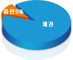

ELS
ELS (Equity Linked Securities) 란 주가수준에 따라 수익이 지급되는 신종증권으로 "주가연계증권"이라고 합니다. 기준이 되는 주가란 주가지수 뿐만 아니라 개별주식의 가격 및 여러 종목으로 구성된 바스켓지수도 포함됩니다. ELS는 투자자의 뜻대로 원금보장 수준과 목표수익률, 투자기간 등을 시장상황에 따라 결정할 수 있는 새로운 투자수단입니다.
-

ELS의 구성내용
ELS는 주로 채권부분과 옵션부분으로 구성되는데, 만기시 원금 보장 정도에 따라 그 비중이 달라질 수 있습니다. 원금보장 수준이 높을수록 채권비중이 커지고, 옵션비중이 작아지게 됩니다. 따라서 옵션비중이 커질수록 기대수익률을 높게 할 수 있는 레버리지 효과를 기대할 수 있으며, 채권비중이 커질수록 원금보장을 추구하는 안정성을 높일 수 있습니다.
-
ELS의 특징
- 다양한 상품구성 : 원금보장 정도에 따라, 옵션의 종류에 따라, 투자기간에 따라 매우 다양한 구조를 만들 수 있으므로 시장상황에 따라 탄력적인 상품구성이 가능합니다.
- 뛰어난 안정성 : 주가 하락 시에도 원금보장이 될 수 있도록 상품설계가 가능합니다. 또한 원금보장이 안되는 공격적인 ELS도 일정 수준의 주가 하락까지 원금을 보장하는 상품이 구성될 수 있습니다. 따라서, 높은 수익률을 추구하면서 투자 위험을 감소시키며 한정시킬 수 있습니다.
- 높은 수익률 : 상품구조에 따라 주가 상승은 물론, 하락 시에도 고수익을 기대할 수 있습니다.
ELS는 고객의 투자성향에 따라 수익성과 안정성을 고려하여 상품을 선택할 수 있습니다. 안정성을 추구하는 보수적인 투자고객은 만기시 원금보장을 받으면서 시중금리 이상의 목표수익률을 기대할 수 있는 ELS에 투자할 수 있습니다. 반면, 다소 공격적인 투자고객은 만기시 원금보장은 되지 않으면서 주식투자처럼 고수익을 기대할 수 있는 ELS에 투자할 수 있습니다. 물론 이 경우에도 손실위험을 최소화하고 고수익 달성 가능성을 높임으로써 주식투자 보다 안정성을 가진다는 점이 ELS의 장점이라 하겠습니다. 시중금리가 물가상승률을 커버하지 못하여 실질금리가 마이너스가 되고 있는 시장상황에서 ELS는 손실위험을 최소화하여 안정성을 높이고, 시중금리 보다 훨씬 높은 수익을 기대할 수 있는 매력적인 상품이라고 할 수 있습니다.
ELS, 왜 신한금융투자인가?
- ELS는 우선 상품성이 중요합니다. ELS 시장에서 업계 리더의 지위를 확고하게 굳힌 신한금융투자는 새로운 아이디어 창출을 통해 새롭고 다양한 해피엔드 ELS를 정기적으로 매달 청약, 발행하고 있어 고객은 다양한 투자 목적에 맞춰 선택 투자가 가능합니다.�또한, ELS는 발행사가 원리금을 지급하므로 무엇보다 발행사의 안정성이 중요합니다. 따라서 ELS를 비롯한 장외파생상품은 믿을 수 있는 우량증권사를 통해 투자하셔야 합니다. 신한금융투자는 신한금융지주회사의 계열사로서 한국신용평가회사로부터 A등급을 부여 받았으며, 국내증권사로는 유일하게 국제신용평가 회사인 S&P (Standard & Poors) 사로부터 BBB-라는 투자 적격등급을 부여 받았습니다.
-
녹아웃(Knock-out)형
투자기간중 한번이라도 미리 정해놓은 주가수준에 도달하면 확정수익을 드리는 구조
(만기 1년 미만 상품이 주종임)
-
불스프레드(Bull Spread)형
만기시점의 주가상승에 비례하여 수익을 드리는 구조로서 최대한도는 가입시 결정
(만기 1년 미만 상품이 주종임)
-
디지털(Digital)형
미리 정해놓은 주가수준 이상이면 일정수익을 지급하는 구조
(만기 1년 미만 상품이 주종임)
-
리버스컨버터블(R/C)형
미리 정한 하락폭 이하로 주가가 하락하지만 않으면 약정한 고수익을 드리는 구조
(만기 1년 미만 상품이 주종임)
-
양방향 녹아웃형
투자 기간중 한번이라도 미리 정해놓은 주가수준에 도달하면 확정수익을 드리는 구조로서 주가가 상승하든 하락하든 수익이 발생할 수 있는 구조
(만기 1년 미만 상품이 주종임)
-
주식형
주가하락시 일정수준까지 원금을 보장받으면서 주가상승분의 수익을 드리는 상품으로서 중도환매가 자유로운 구조 (원금보장은 안됨)
예를 들어 해피엔드 마이웨이는 만기 시점의 지수가 설정일 대비 30%까지 하락해도 원금이 보장되면서 지수상승시에는 지수상승분의 110%를 지급하는 차별화된 특징
-
조기상환형
복수의 개별종목 주가가 모두 일정 주가수준 이상이면 정해진 기간별로 조기상환되며 수익을 드리는 상품으로서 원금보장은 안되나 고수익을 기대할 수 있는 구조
(Two Star, Star Trio ELS)